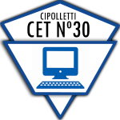

Materias de Cuarto Año

Dulce Ana Vigna Coronel
- Ingles Tecnico
- El inglés técnico es una variante especializada del idioma inglés que se utiliza en contextos profesionales
y científicos para describir conceptos y términos específicos relacionados con una determinada área o campo
de
conocimiento.
- Logica
- La lógica matemática, analiza los sistemas formales en relación con el modo en que se definen los objetos
matemáticos como los conjuntos y los números, estos al desarrollarse y nutrirse de la teoría intuitiva, dan
origen a la teoría de modelos.
- Programacion
- La Programación es donde se crean algoritmos y se codifican códigos para desarrollar programas, software y
todo
tipo de aplicaciones tecnológicas
- Sistemas Electronicos
- Los sistemas electrónicos son conjuntos de circuitos que operan con señales eléctricas y las tratan para
ejecutar una determinada función
- Sistema de información estudia el conjunto de datos vinculados entre sí para la obtención de objetivos
empresariales.
- Algebra
- Algebra es la rama de la matemática que estudia la combinación de elementos de estructuras abstractas
acorde
a ciertas reglas.
- Comunicacion Oral y EScrita
- COE es la transmisión de información entre dos o más individuos a través del habla y del código contemplado en un idioma
Educacion Fisica
Educación física es una disciplina que se centra en diferentes movimientos corporales para perfeccionar,
controlar y mantener la salud mental y física del ser humano.
Historia
La historia es el estudio del pasado a partir de registros,
documentos, fotografías, filmes, libros y cualquier fuente de informacion que aporte datos sobre los eventos
pasados que afectaron a países y a comunidades.
Problematicas Ambientales
Estudia el impacto ambiental en la tierra por el propio ser humano, sus consecuencia y como se puede llegar
a resolver
Redes
Taller sobre el aprendizaje en la conectividad de computadoras
Web
Taller para aprender HTML- CSS- JS<<